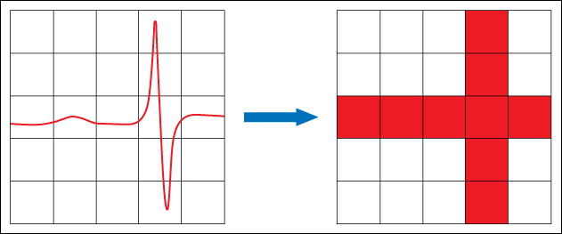

LabVIEW automatically handles memory allocation. Since this process is automatic, LabVIEW must take precautions to handle the data safely. This means that LabVIEW copies data frequently. If the program deals with large sets of data, large and frequent data copies may lead to an out of memory error. Use the following guidelines to avoid memory problems and optimize the program to handle large data sets.
|
Note��You also can use the Profile Performance and Memory window to acquire and display data about the execution time and memory usage of VIs. Use this window to determine which VIs produce memory problems. |
Because LabVIEW is a dataflow language, LabVIEW creates a copy when a VI needs more data, such as when one wire becomes two wires. Although LabVIEW usually is able to detect when to make a new copy, if LabVIEW is unsure, it makes a copy just in case.
|
Note��When you use the LabVIEW Real-Time Module, memory copies affect the determinism of the real-time applications. |
Use the Show Buffer Allocations window to determine where LabVIEW allocates memory. This window identifies data buffers, which LabVIEW uses to store copies of data.
Use the following guidelines to reduce the number of copies LabVIEW needs to make:
|
Note��Some of the following tips are contrary to good LabVIEW design practice, and you should consider these suggestions only to decrease memory consumption while working with abnormally large sets of data. |
 |
Tip��Newer LabVIEW versions make fewer automatic copies of data than previous versions. So the newer the version, the better LabVIEW handles large sets of data. |
When you cannot avoid creating data copies, the next possible solution is to make each copy smaller. To do so, break large data sets into smaller sets when transporting data from one place to another - a strategy known as chunking. When chunking, the copies LabVIEW makes do not adversely affect memory usage. The copies do adversely affect throughput, so minimizing them is still a good idea. The following example demonstrates this concept.
You have 512 MB of data that you need to copy to disk. You could fetch all the data and save to disk with a single call. However, even if you minimize the number of copies down to one, you are still transferring the original data and one extra copy. This means you are requesting 1 GB of memory from LabVIEW. A better approach is to loop on getting 500 KB of data a time and stream that to disk. The memory hit is now down to 1 MB, or 500 KB for the original data and 500 KB for the copy, which is well within the limits of most computers.
A side benefit is that you save the enormous amount of time it would take LabVIEW to allocate the large block of memory. Streaming 250 MB of data to disk should take 15 seconds or less on most modern computers. It could take LabVIEW that long just to allocate the 1 GB of RAM it would take to do this the other way.
If you stream large sets of data or store data in a Redundant Array of Independent Disks (RAID), you also can transfer the data without buffering to reduce data copies and speed up data transfers. To disable buffering, wire a TRUE value to the disable buffering input of the Open/Create/Replace File function.
In many interactive applications, the only thing you want to do with the data is display it for someone to see. There may be a real reason to display 5 million data points, but this amount of data is far beyond the capabilities of most displays. The average LabVIEW graph is on the order of 300 to 1000 pixels wide. Five million points is three orders of magnitude more than you can actually see on a waveform graph. Data decimation is the answer to this problem.
For instance, you would like to see a pixel-accurate version of the huge data set on a graph. If there is a single glitch in a 5 million point buffer, the plot should be a horizontal line with a single spike one pixel wide. If the data is a sine wave with more cycles than the pixel width of the screen, the graph should be a solid band across the screen - no aliasing. A max-min decimation algorithm solves both of these use cases.
Max-min decimation is decimation in which you use the maximum and minimum data points of each decimation interval to provide the decimation. Simple decimation uses the first point of each decimation interval for the data point of the decimation interval. Simple decimation leads to aliasing artifacts, so it should not be used unless time is of the utmost importance and accuracy is not that important.
To implement max-min decimation, first determine the pixel width of the graph. Use the Plot Area:Size:Width property of the graph to find this. To reduce artifacts, you need at least two decimation intervals per pixel width, so multiply the graph pixel width by two to get the nominal number of intervals to divide the data into. Divide the data length by this number and round up to the nearest integer. This gives you the chunk size for decimation. For each chunk, find the maximum and minimum points and order them in the same order they occurred in the data set. Do not worry that the last chunk has less points than the rest. The problem is less than a pixel wide and cannot be seen on the computer screen. String all the max and min data together and plot. You will have four points per pixel width on the screen. This allows the single, pixel-wide spike to occur without bleeding over into adjacent pixels. The max/min decimation assures you always see the peaks of the data, giving you the solid band the high frequency sine wave should produce. This all occurs with much less data plotted to the graph, resulting in much higher speeds.
In the following illustration, if you process the data on the left using max-min decimation, LabVIEW produces the graph on the right.

Use either a queue or a data value reference to store large data sets in memory without consuming a large amount of memory. Create a queue with a single element that contains the data. Any time you want to access the data, dequeue the element. This blocks other parts of the program from simultaneous access. After you operate on the data, enqueue the element again. The only object you need to transfer is the queue reference. LabVIEW does not create extra data copies when transferring queues. If you name the queue, you can get a reference to it at any point if you specify the name in the Obtain Queue function. Creating multiple data objects is as easy as creating multiple queues.
You also can use a data value reference to store data without creating extra data copies. Data value references are slightly more efficient than queues but have no timeout options. Instead of transferring data to a queue, you can create a reference to data and pass around the reference. To operate on the data, use the In Place Element structure. The Data Value Reference Read / Write Element border node accepts a data value reference as an input, allows you to operate on the data within the In Place Element structure, and replaces that data in the original memory space.
|
Note��You can allow only member VIs of a LabVIEW class to create data value references to the class in the Inheritance page of the Class Properties dialog box. |
You also can use a functional global variable to store large data sets in memory. Using a functional global variable, LabVIEW saves and accesses the data in chunks, which allows for passing data without consuming a large amount of memory. Use an uninitialized shift register as the means to hold the data. Use the Array functions to read, write, and resize the data. The Array functions operate in-place and do not create data copies. This approach is typically slower than the queue approach.